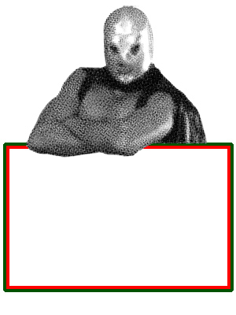

Horario
Lunes a jueves 13:30-16:30 y 20:00-0:00.
Viernes y sábado 13:30-1:30.
Domingo 13:30-0:00.
Dónde estamos
 C/ Princesa, 3. 28008 Madrid (Plaza de los Cubos)Metro: Plaza de España
Tel.: 91 559 50 43
Lunes a jueves 13:30-16:30 y 20:00-0:00.
Viernes y sábado 13:30-1:30.
Domingo 13:30-0:00.